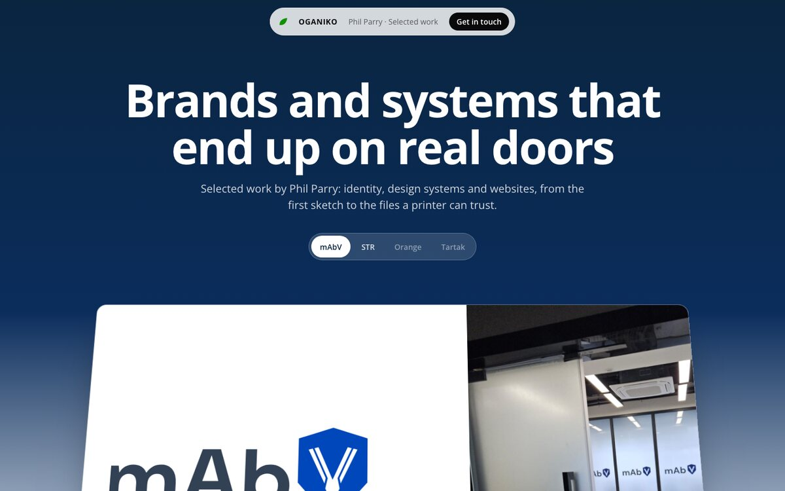
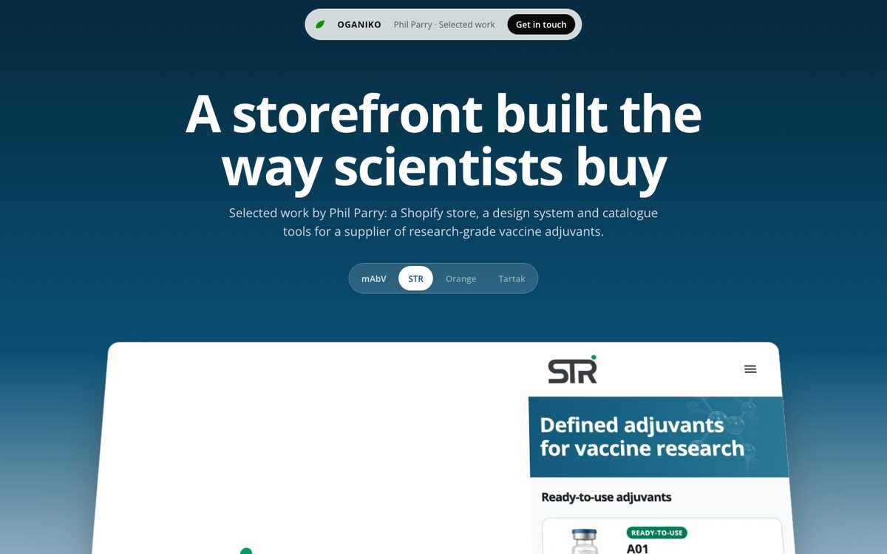
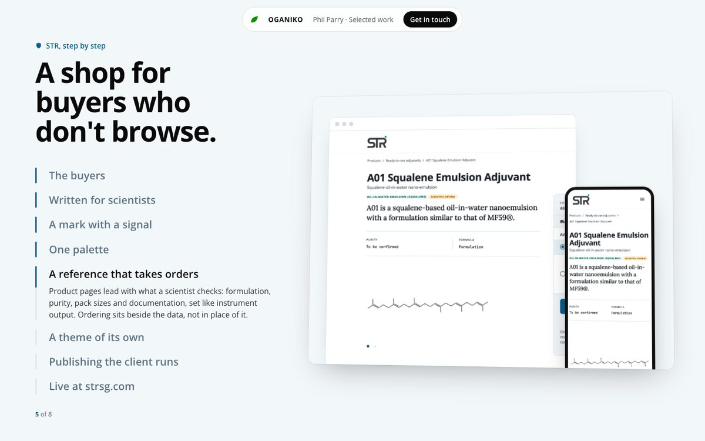
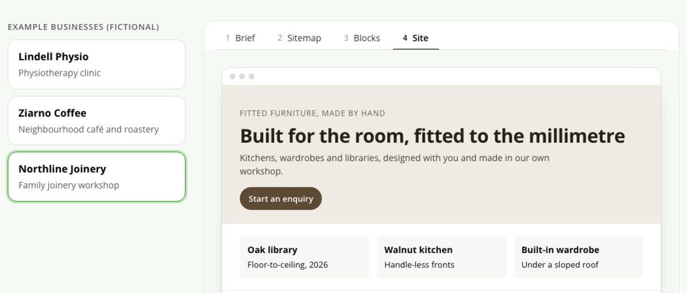
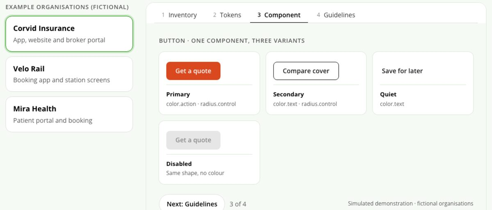

Work, and what it could be next
Two kinds of pages live here. Selected work is real client work, shown with real material. Explorations are capability demonstrations: working examples of experiences I could build for a brief like yours.
Client workClient work, awaiting client approvalCapability demonstration
Selected work
Projects delivered for real clients. Every claim on these pages traces to the project's own records.
-

Brand identity · Design system · Brand kitmAbV
A new antibody company needed an identity investors and scientists could trust. It's now on the doors of its offices in Guangzhou.Client workOpen the case study -


Shopify storefront · Design system · Catalogue toolsSTR Technologies
A shop for scientists who compare specifications, not pictures: built from scratch on Shopify and live at strsg.com.Awaiting client approvalOpen the case study

Explorations
Capability demonstrations. They're not client commissions, and any businesses in them are fictional. They show the kind of experience I'd build for a brief like this, and they work.
-

Product story · Service pageWordPress sites your team can run
How do you sell a WordPress build to a business owner? Let them watch a brief become a sitemap, a block library and a finished page, then click a block to see what their team would edit.Capability demonstrationTry it -
 Product story · Service page
Product story · Service pageShopify stores that stay easy to run
How do you show a shop owner what a well-run store looks like? Let them watch one spreadsheet become collections, a product page with real buying choices, and a checkout, including one for business buyers.Capability demonstrationTry it -

Product story · Service pageDesign systems your teams actually use
How do you show what a design system is worth? Let a product lead watch twenty-three buttons become one set of tokens, one component and its rules.Capability demonstrationTry it -
 Product story · Service page
Product story · Service pageAmazon product research and listings
For Amazon sellers: watch search research become a title, bullets, an image set and A+ content, using real products.Capability demonstrationTry it
In preparation
The same approach, for the other kinds of work I do:
- Research
- Conversion rate optimisation